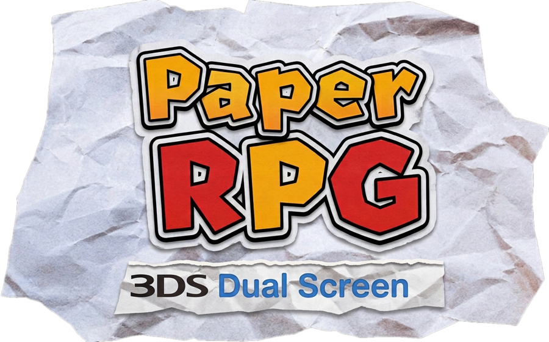
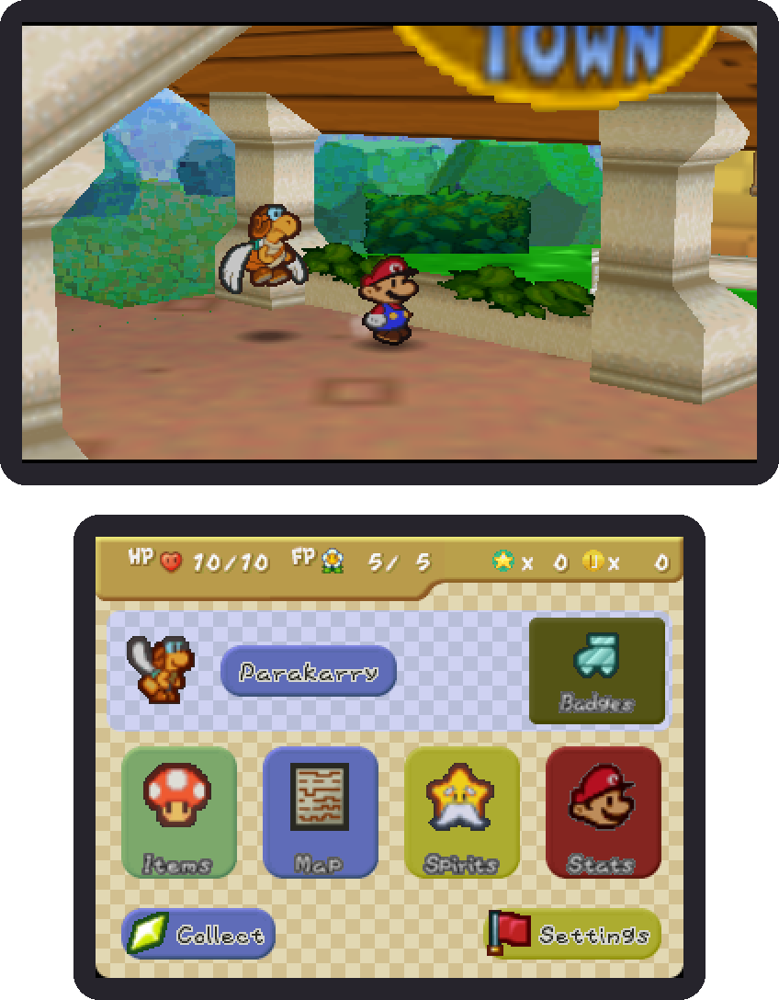
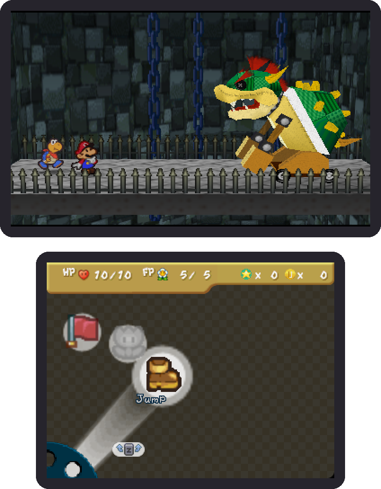
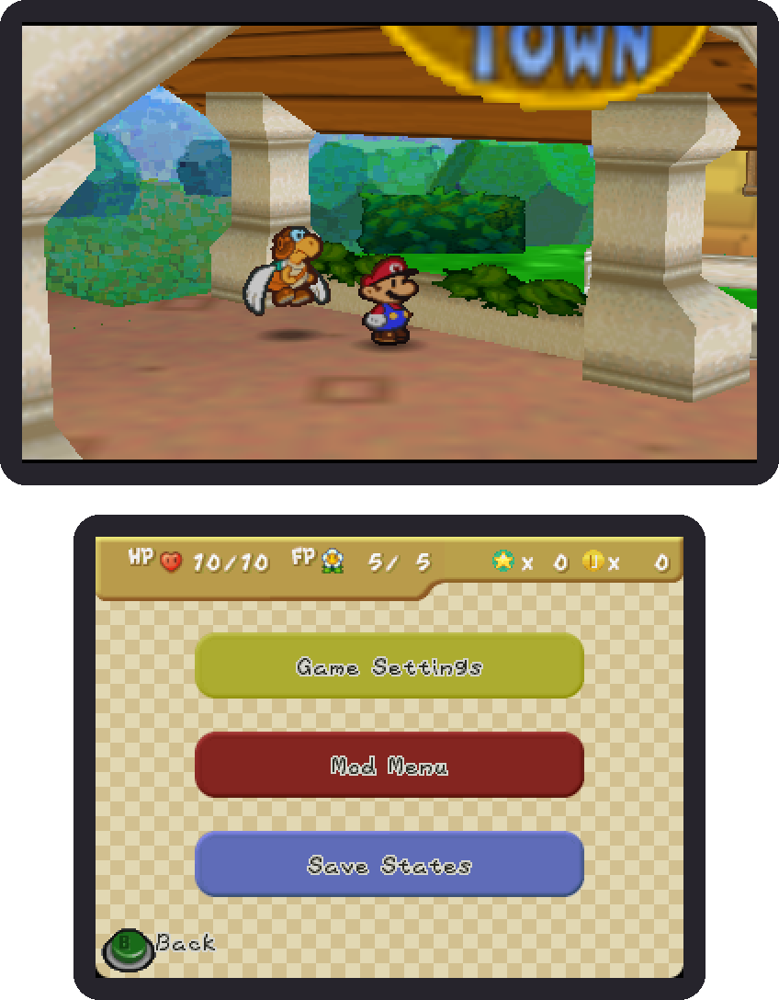
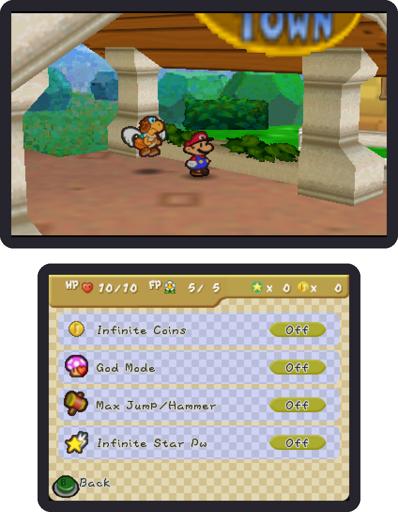

Nativo y fluido
El código del juego compilado para el procesador de la 3DS. 30 fps estables incluso en una Old 3DS.

Port nativo para Nintendo 3DS basado en la decompilación de Paper Mario 64. Sin emulación: el juego corre directo en la consola, con las dos pantallas.
Necesitas tu propia copia del juego (Paper Mario, N64, versión USA o europea). Aquí no se distribuye ninguna ROM ni contenido de Nintendo.
El código del juego compilado para el procesador de la 3DS. 30 fps estables incluso en una Old 3DS.
Medallas, objetos, mapa, espíritus y estadísticas siempre a la mano en la pantalla inferior. Cambio rápido de compañero con un toque.
La rueda de comandos original responde al toque, y eliges a tu objetivo tocando su imagen.
Tres espacios con miniatura y fecha para guardar y volver en cualquier momento.
Monedas infinitas, modo dios, HP/FP/BP al máximo, carrera rápida, golpe de un solo impacto y más. Al apagarlos todo vuelve a como estaba.
3D estereoscópico opcional, modo oscuro, filtro de imagen, botón Z configurable, Skip/Auto en cinemáticas y menús en español o inglés.




El port es gratis y lo seguirá siendo. Si te gusta y quieres invitarme un café, se agradece muchísimo. ☕
Necesitas una consola con firmware personalizado (Luma3DS). Si aún no lo tienes, sigue la guía oficial de la comunidad: 3ds.hacks.guide.
Extrae la ROM de tu propio cartucho de Paper Mario (N64). Sirven la versión USA y la europea (PAL), en .z64, .n64 o .v64. Para comprobar que es la correcta, su SHA-1 (en .z64) debe ser:
USA (inglés):
3837f44cda784b466c9a2d99df70d77c322b97a0
Europa / PAL (español, inglés, francés y alemán):
2111d39265a317414d359e35a7d971c4dfa5f9e1
Ponle de nombre baserom.z64 (o baserom.n64 / baserom.v64) y cópiala a la carpeta de su versión (créala si no existe):
USA: sdmc:/3ds/papermario/
Europa (PAL): sdmc:/3ds/PaperRPG_Espanol/
Instala el de tu versión: PaperRPG_English.cia (ROM USA) o PaperRPG_Espanol.cia (ROM europea PAL). Los dos pueden estar instalados a la vez. Recomendado: el CIA con FBI, que se abre desde el menú HOME; también hay .3dsx para el Homebrew Launcher, aunque el audio usa menos recursos con el CIA.
Con la consola conectada a internet, abre FBI → Remote Install → Scan QR Code y escanea el código de tu versión. FBI descarga e instala la más reciente. Sigue haciendo falta tu ROM en la SD (paso 3).
PaperRPG_English.ciaPaperRPG_Espanol.ciaEl port no incluye gráficos, música ni textos del juego: los lee de tu ROM al arrancar. Así no se distribuye nada de Nintendo.
Desde la versión 1.1 funciona con la europea (PAL, código NMQP) usando PaperRPG_Espanol, con sus cuatro idiomas: el idioma se cambia desde la pantalla de título, en la pantalla táctil. La japonesa todavía no. Si usas una ROM que no corresponde, el port te avisa al abrirlo.
Se desarrolló y probó en una Old 3DS XL; también corre en New 3DS/2DS. Necesita Luma3DS.
En save.flash, dentro de la carpeta de tu versión (sdmc:/3ds/papermario/ o sdmc:/3ds/PaperRPG_Espanol/); los save states en state1.bin–state3.bin y los ajustes en config.ini, en la misma carpeta. Los save states se invalidan al actualizar el port; la partida normal no.
Todavía no hay un importador; es una idea para versiones futuras.
Repórtalo en GitHub Issues con una foto o video y el mapa donde pasó.